Fridays, Saturdays & Sundays
Handmade vegan food, lovingly made
by Kaya. Available at her table under the glass roof of Greenwich Market. Lasagna, quiches and parmigiana, bowls of colourful salads, and a cake counter worth saving room for.
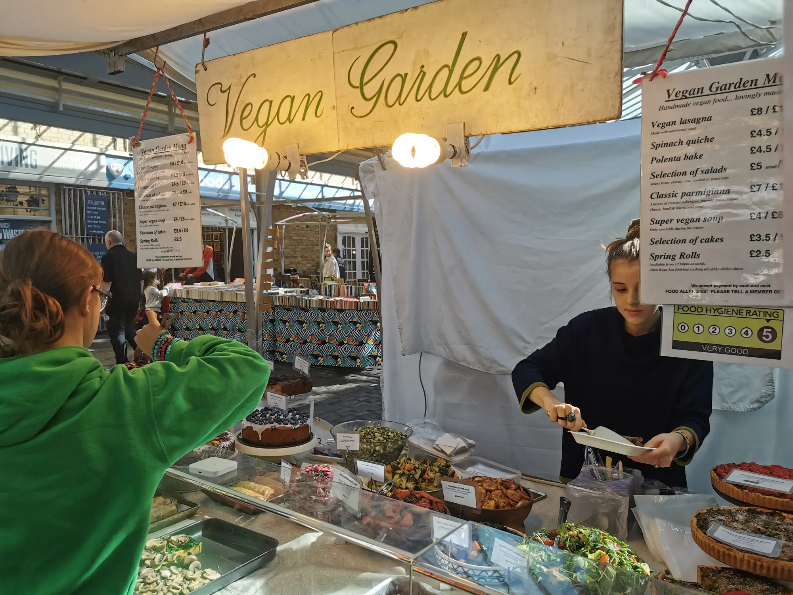
Meet Kaya, the vegan chef
Every dish on the table is made by hand by Kaya: lasagna layered in deep trays, quiches in fluted tins, bowls of slaw and roast veg, and cakes stacked high on their stands.
It’s generous home cooking that happens to be entirely vegan.
How a box works
Have a main on its own, or with two salads from the day’s bowls, packed into a box you can carry anywhere.
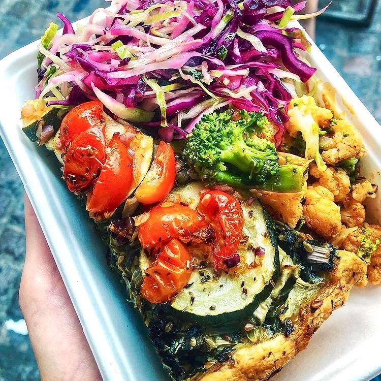
Pick a main
Lasagna, spinach quiche, polenta bake, classic parmigiana, or stuffed veg in summer.
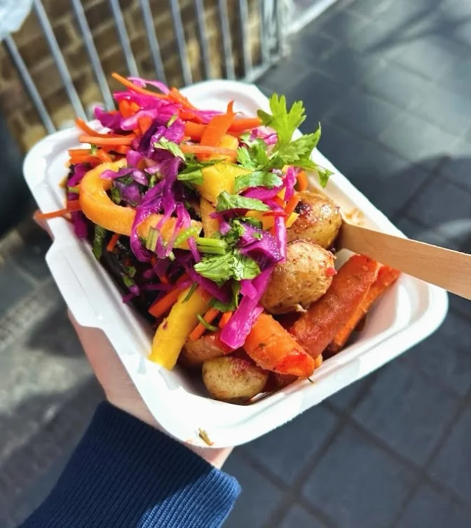
Add two salads
Red cabbage slaw, chickpeas, greens and roast veg: whatever is on the table that day.
Finish with cake
A slice from the counter. Every cake is labelled with its allergens.
The regulars
Full menu and prices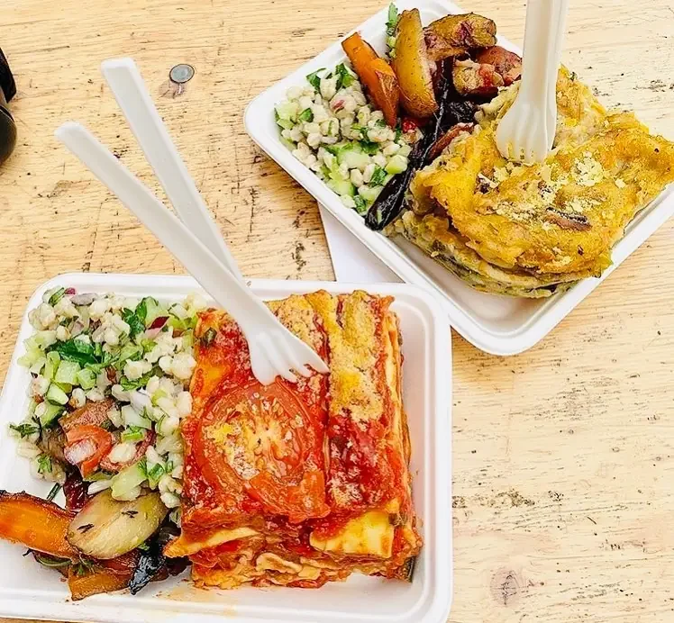
Vegan lasagna
£9 / £12
Classic Parmigiana
£9 / £12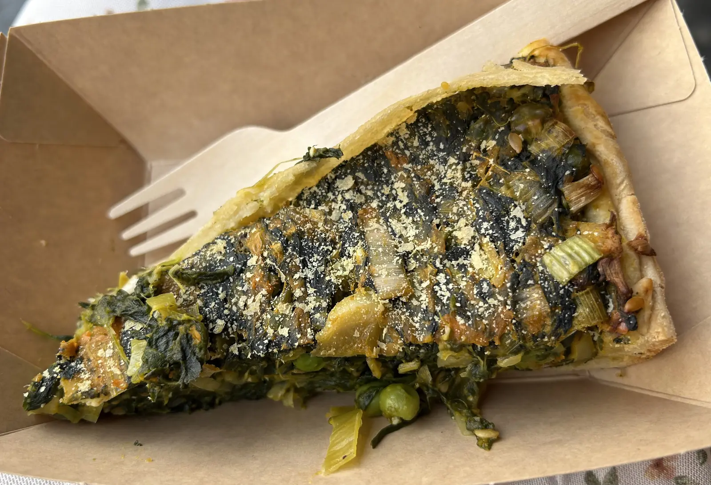
Spinach quiche
£6 / £9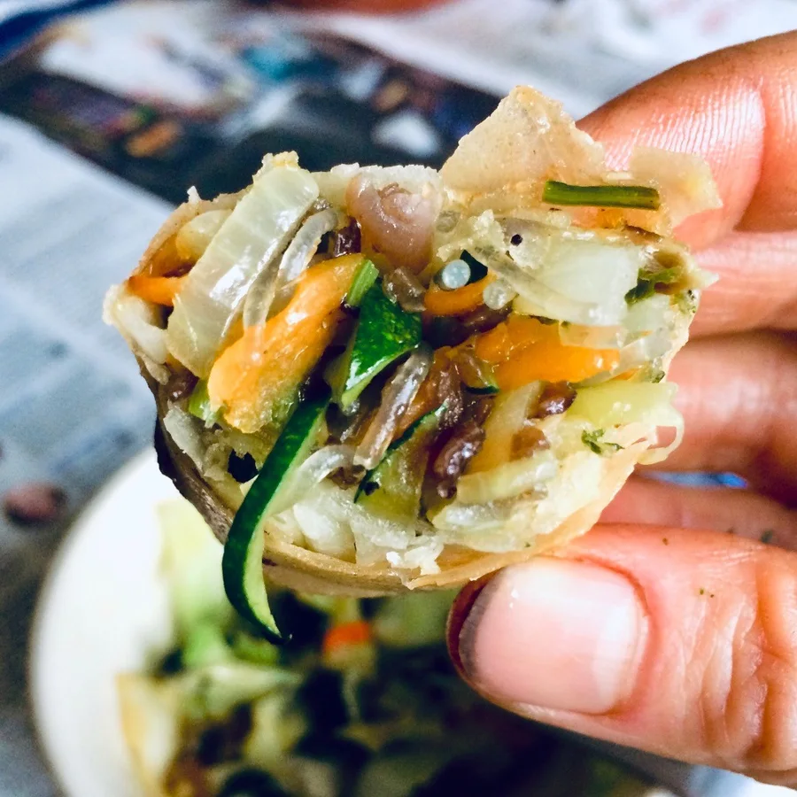
Spring rolls
£2.5
A table full of colour
Bowls of salads, trays of mains and a whole row of cakes, all made by Kaya and laid out fresh every Friday, Saturday and Sunday.
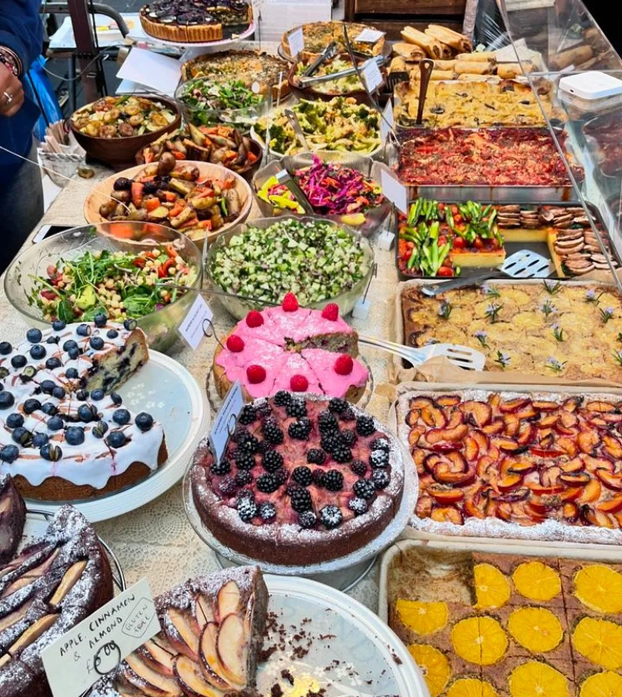
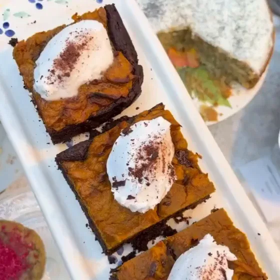
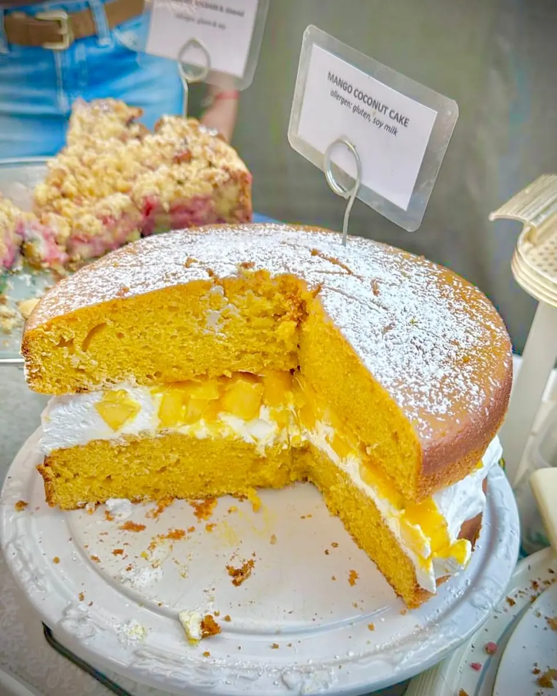

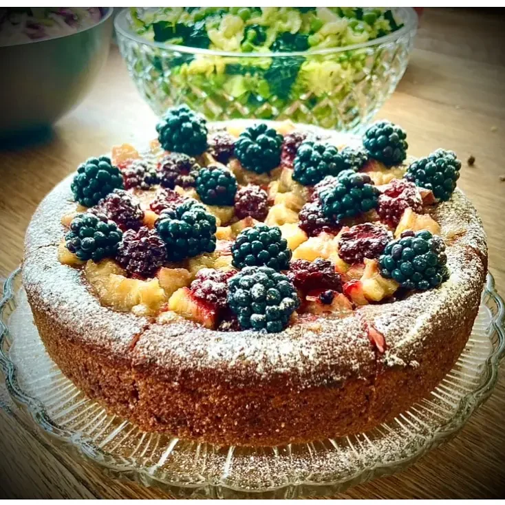

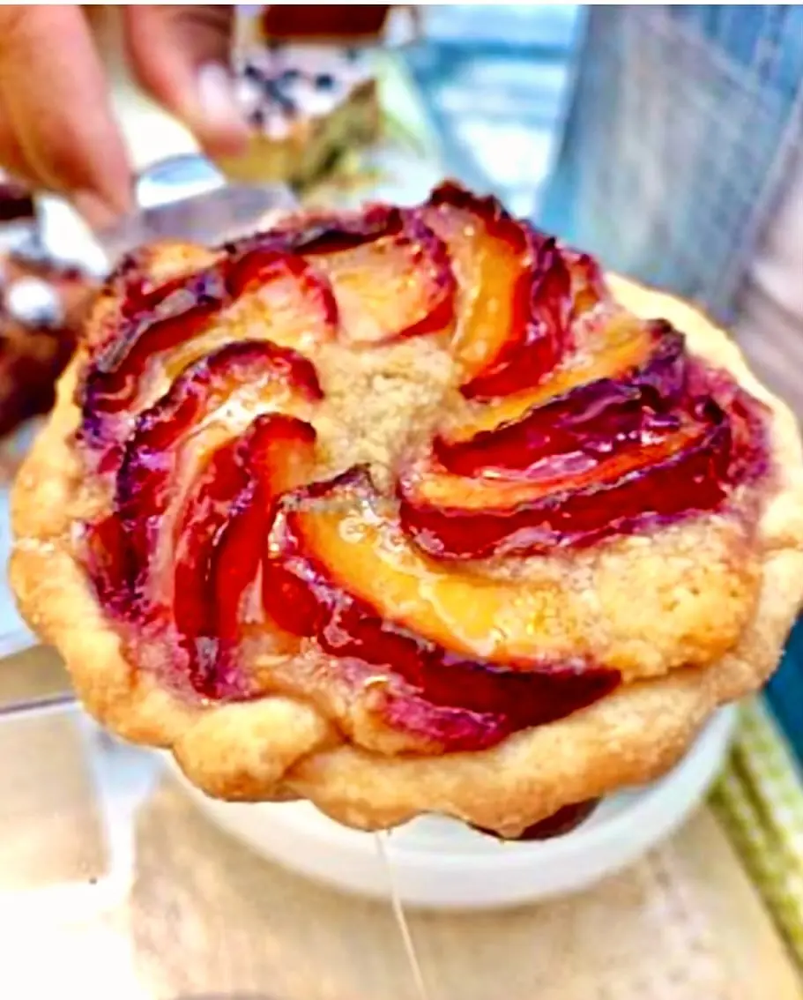
Save room for cake
Generous vegan cakes and fruit tarts. The line-up changes every weekend; these have all made an appearance.
Slices £3.5 / £5
“London’s best kept vegan secret?”
“Picked up vegan lasagne and salads. So. Freaking. Good.”
“Look no further than Vegan Garden London. Thank you Kaya!”
Rated 4.9 on Google from 93 reviews. Quotes shared by customers on Instagram.
- Where
- Greenwich Market, College Approach, London SE10 9HZ
- Pay
- Cash and card
- Allergies
- Please tell a member of staff